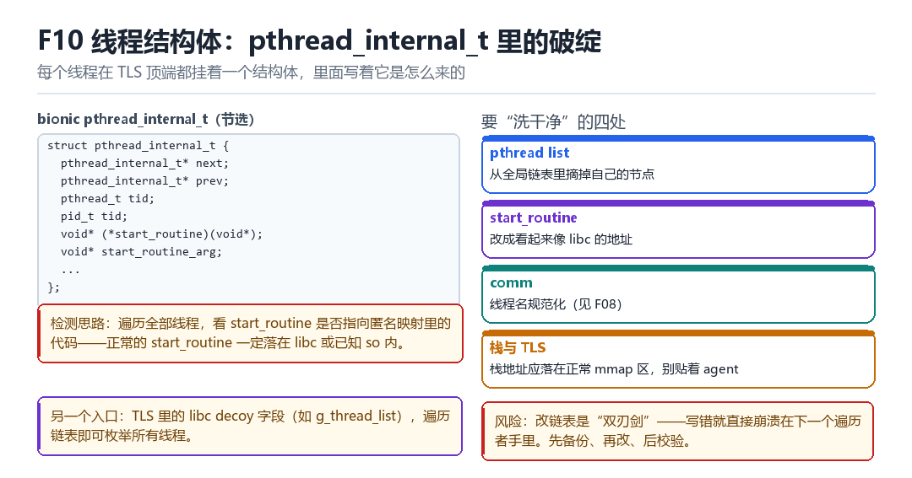

Frida 线程结构体处理
bionic pthread_internal_t、start_routine、libc decoy、pthread list 清洗
每个线程在 TLS 顶端都挂着一个结构体，里面写着它是怎么来的。
10.1 结构体里的关键字段

struct pthread_internal_t {
pthread_internal_t* next;
pthread_internal_t* prev;
pthread_t tid;
pid_t tid;
void* (*start_routine)(void*); // 线程入口
void* start_routine_arg;
};10.2 检测原理
遍历所有线程，检查 start_routine 指向哪里。正常的 start_routine 一定落在 libc 或已知 so 内；如果它落在一段匿名可执行映射里，那就很可疑了。
另一个入口是 TLS 里的 libc decoy 字段（例如全局线程链表），顺着链表就能枚举所有线程，绕开 /proc 遍历。
10.3 要洗干净的四处
| 目标 | 做法 | 风险 |
|---|---|---|
| pthread list | 从全局链表摘掉自己的节点 | 写错就崩在下一个遍历者手里 |
| start_routine | 改成看起来像 libc 的地址 | 被反查会露馅 |
| comm | 线程名规范化（F08） | 只能骗过粗查 |
| 栈与 TLS | 让栈落在正常 mmap 区 | 贴太近 agent 就露 |
10.4 本章自测
- pthread_internal_t 里哪个字段最能暴露来源？
- 除了遍历 /proc，还有什么方式能枚举线程？
- 改链表前必须做哪三件事？
- 为什么“栈地址”也是线索？
10.5 深入：TLS 是怎么找到 pthread_internal_t 的
在 bionic 里，TLS 的布局是：线程指针（TP）指向 TLS_SLOT_SELF，而 pthread_internal_t 就在 TP 附近（具体偏移由 __get_tls() 与结构布局决定）。所以“拿到 TP 就能拿到结构体”。
// aarch64: TP 在 tpidr_el0
register void* tp asm("tpidr_el0");
auto self = *(pthread_internal_t**)((char*)tp - TLS_OFFSET);10.6 实战：检测“start_routine 落在匿名段”
- 遍历所有线程，读
start_routine。 - 在 maps 里查这个地址属于哪一段。
- 如果该段是“匿名 + 可执行”，就是可疑项。
- 排除 JIT 缓存等已知合法匿名段。
10.7 原理推演：为什么“线程结构体”能暴露来源
因为它记录了“这个线程是怎么被创建的”——start_routine 指向创建时传入的函数地址。正常的线程入口在 libc 或业务 so 里；注入的线程入口在你的匿名映射里。这个差异无法用“改名”消除。
| 字段 | 正常值 | 注入后 |
|---|---|---|
| start_routine | libc / 已知 so | 匿名段 |
| 栈地址 | 常规 mmap 区 | 可能贴着 agent |
| tid | 递增 | 可能异常 |
| comm | 业务命名 | 框架默认名 |
所以“洗干净”的本质是：让这四个字段都落在正常范围内。其中最难的是 start_routine——因为它是真实地址，不能随便编。
10.8 数据细节：TLS 偏移的取法
// TP 寄存器（tpidr_el0）指向 TLS 块
// bionic 里 pthread_internal_t 就在 TP 附近
// 具体偏移由 __get_tls() 的实现决定，随版本变化
register void* tp asm("tpidr_el0");10.9 深入：为什么“栈地址”也是线索
线程栈是从 mmap 区分配的，正常情况下会落在“常规匿名映射区”。而注入的线程，栈可能紧贴着 agent 的映射，或者落在一个不常见的高地址——这两种都会在“栈地址分布”上体现出来。
| 观察 | 正常 | 可疑 |
|---|---|---|
| 栈地址范围 | 常规 mmap 区 | 贴近 agent |
| 栈大小 | 1MB 左右 | 自定义大小 |
| 相邻映射 | 其他栈 | agent 段 |
检测方只要遍历所有线程、读它们的栈指针、看落在哪个 VMA 里，就能得到一张“栈分布图”。这张图上的离群点，就是可疑线程。
10.10 深入：libc decoy 是什么
bionic 在 TLS 附近维护了一些“看起来像全局变量”的字段（例如线程链表头）。它们的作用本来是给 libc 自己用的，但因为位置固定、语义明确，就成了“枚举线程的旁路入口”。
// 找到 libc 里的线程链表头（通过符号或特征）
// 顺着 next 指针遍历，就能拿到所有 pthread_internal_t
// 这条路径不经过 /proc，也不产生系统调用所以“洗链表”不只是为了“骗过 /proc 遍历”，也是为了“骗过这种旁路枚举”。两条路径都要处理，才算真的干净。
10.11 实战：改造前后的自检
1. 遍历 /proc/self/task，看有没有异常线程
2. 走 libc 的线程链表，看节点数是否与 /proc 一致
3. 检查每个线程的 start_routine 落在哪一段现场：改名改不掉的那一列
名字改完了，maps 也过滤了，检测方还是一口报出“发现注入”。它没读 /proc/self/task/*/comm，而是顺着 TLS 顶端的 pthread_internal_t 双向链表走了一遍，看到某个节点的 start_routine 落在一片没有文件名的可执行页里。那一列是运行时留给自己看的，不像 comm 那样能随手涂改。
bionic 把每个线程的元信息放在 TLS 块附近：next / prev 串成全局链表，start_routine 记着“这条线程是怎么被造出来的”，栈基址与大小也在同一片结构里。正常的线程入口一定落在 libc 或某个带路径的 so 内；注入线程的入口落在匿名映射里，这个差异改名字消除不了，过滤 maps 也只是让它换个地方露出马脚。
把一次枚举拆成七拍
- 检测方 → 对当前线程的 TP 寄存器（aarch64 的 tpidr_el0）→ 读出 TLS 基址 → 结果：拿到自己这条线程的 pthread_internal_t 起点，整套枚举不需要打开任何 /proc 文件。
- 检测方 → 对 pthread_internal_t 的 next / prev → 沿全局双向链表逐个走 → 结果：不碰 /proc 就把所有线程列全，连刚创建还没来得及出现在 task 目录里的也算上。
- 检测方 → 对每个节点的 start_routine → 与 maps 中带路径的可执行区间比对 → 结果：落在 libc / 业务 so 的判为正常，落在匿名 r-xp 段的当场标记异常。
- 检测方 → 对 stack_base / stack_size 或 TLS 里的 decoy 字段 → 查栈落在哪个 VMA → 结果：贴着 agent 映射分配的栈同样可疑；栈地址分布是改名之后仍存在的硬线索。
- 检测方 → 对 tid、comm、join_state → 与 /proc/<tid>/stat 交叉核对 → 结果：名字改得漂亮但 start_routine 没动，两份数据自相矛盾，反而坐实了伪造。
- 你的清洗代码 → 对全局链表 → 先备份指针、选没有其它线程在遍历的时机、再摘节点 → 结果：遍历者看不到这条线程；改错一步，崩溃会出现在几分钟后一个完全无关的 pthread_join 里。
- 你的清洗代码 → 对 start_routine 与栈 → 让入口指向合法区间、栈落在常规 mmap 区 → 结果：粗查通过；但用入口地址反查 so 的符号表，一个“看起来像 libc 却没有符号”的地址更可疑。
复现：把入口地址打出来看
先用 Frida 自己观察自己：枚举线程与可执行区间，把 PC / 入口和带文件路径的映射对上号。再用 gdb 或 bionic 的私有接口读 TLS，确认偏移——这一步千万别硬编码常数，pthread_internal_t 相对 TP 的位置随 Android 版本变。
// tls.js —— 用 Frida 观察自己的线程与区间
const ranges = Process.enumerateRanges('r-x');
send({tid: Process.getCurrentThreadId(), ranges: ranges.length});
Process.enumerateThreads().forEach(function (t) {
send({tid: t.id, pc: String(t.context.pc)});
});
# gdb（能否直接读到系统寄存器取决于 gdb 与目标）
(gdb) info registers tpidr
(gdb) x/8gx $tpidr_el0
// C 侧更稳的取法：用 bionic 私有接口，别写死偏移
// #include <bionic/tls.h>（各版本路径与结构不同）
void* tls = __get_tls();
// 再按对应版本头文件的定义取 pthread_internal_t算成功：脚本枚举出的 tid 与 /proc/self/task 完全对得上，每条线程的 PC 都能在带路径的 r-x 映射里找到归属；清洗后再跑同一套枚举，异常节点数归零，并且连续跑 1000 次线程创建/销毁不崩。算失败：枚举结果与 /proc 不一致，说明链表摘漏或摘错；清洗后出现随机 SIGSEGV，多半是有别的线程正在遍历时动了 next/prev；最糟的一种是把 start_routine 改成一个“看着像 libc、反查却查不到符号”的地址——这比不改更容易被判定为伪造，等于自己给检测方递了一条高置信度特征。
| 枚举入口 | 能读到什么 | 改名能否骗过 | 过滤 maps 能否骗过 |
|---|---|---|---|
| /proc/self/task/*/comm | 线程名 | 能 | 无关 |
| /proc/self/task/*/stat | tid、状态、优先级 | 不能 | 无关 |
| TLS 全局 pthread 链表 | start_routine、栈、tid | 不能 | 不能 |
| /proc/self/maps | 栈与映射归属 | 无关 | 能，但 dev/inode 会露 |
| ART ThreadList / JNI | Java 线程对象 | 部分 | 无关 |
“结构自洽比字段好看更重要”这条结论，直接通向 LSPosed 部 L09 侧信道与结构差分检测：那里不讲单个特征，把线程数、创建时序、栈地址分布直接做成差分；KPM 部 M02 内核观察面与基础检测处理 则从内核读 task 结构，连用户态那条被你洗过的链表都不必信——你在 EL0 洗得再干净，EL1 看到的是另一份原始数据。